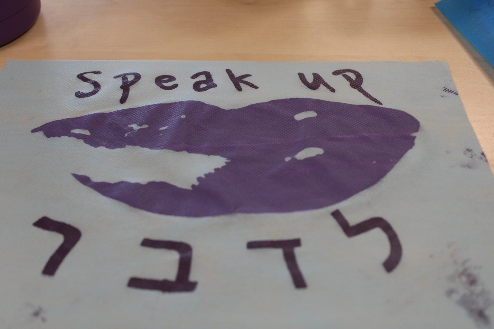

I will be talking about my screen printing process and how my final artpiece came to life. The screenprinting project was where we all picked a specific message we wanted to talk about and make into a visual art form. My artwork was made to bring awareness to people who suffer from depression or anxiety to show them it is okay to speak up. For each of our art pieces we had to include ourselves. I decided to include my lips as a symbol of speaking up. To begin with our projects we first had to make a loopy model. From there we made sketches on paper.
This part of the project was difficult for me because there are many ways one can display a message and I was stuck between displaying a message about speaking up or one about listening to those who speak up. I made a decision to make my project about trying to get others to speak up. After I decided what I wanted my art to convey we started taking pictures of ourselves to incorporate into the art. I took a picture of myself and edited it to be just my lips using photoshop.

This part of the project was mainly focused on the Creative and Innovative part of the 21st century skills we learned in New Media. We used tools in Adobe Photoshop such as gradient, brightness/contrast, and levels.

Here is a video of me working in Adobe Photoshop
After we got the image part of our design it was time to start measuring for the screens. The measurements were gotten by using the png of however many screens our art had and inputting them into Adobe Illustrate to measure the perimeter and other dimensions such as the inner and outer dimensions. We did this so that when it was time to use the saw we knew what measurement we needed. After we got our wooden frames measured we then had to figure out the color mix. This was done by using the color dropper which allowed us to see the ratios of the colors which made up the final color we wanted. We used this to find our color mix so that when it was time to mix the paint we knew how much scoops we had to take.
When the mesh was stretched we then had to cut the vinyl of our art piece. After that we had to iron the vinyl onto the mesh. This part of the process was the most tedious to me because of the fact it too two class period to get all the air bubbles out of one screen. However this was the second to last step before getting to print my work! Once i got the vinyl melted onto the mesh I taped off the edges and now it was time to print!